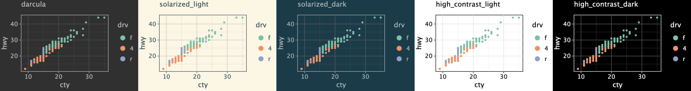
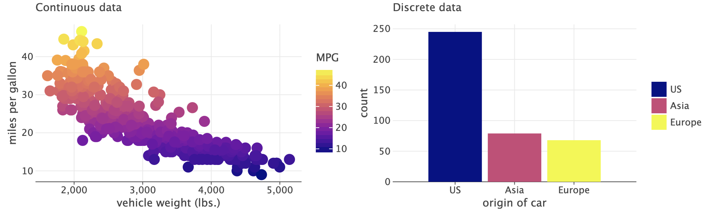

What is new in 2.5.1¶
Mostly a maintenance release.
Nevertheless, few new features and improvements were added as well, among them:
New rendering options in
geom_text(),geom_label().geom_imshow()is now supportingcmapandextentparameters (also,norm,vminandvmaxwere fixed).
What is new in 2.5.0¶
Plot Theme¶
theme_bw()¶
See: example notebook.
Theme Flavors¶
Theme flavor offers an easy way to change the colors of all elements in a theme to match a specific color scheme.
In this release, we have added the following flavors:
darcula
solarized_light
solarized_dark
high_contrast_light
high_contrast_dark
{kind=link}

See: example notebook.
New parameters in element_text()¶
size,family(example notebook)hjust,vjustfor plot title, subtitle, caption, legend and axis titles (example notebook)marginfor plot title, subtitle, caption, axis titles and tick labels (example notebook)
New Plot Types¶
See: example notebook.
Color Scales¶
Viridis color scales: scale_color_viridis(), scale_fill_viridis().
Supported colormaps:
magma
inferno
plasma
viridis
cividis
turbo
twilight
{kind=link}

See: example notebook.
Change Log¶
See CHANGELOG.md for other changes and fixes.